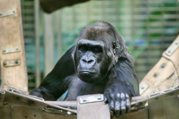

Wikipedia preview demo site

Wildlife of the Central African Republic
Wildlife in the Central African Republic is in the vast natural habitat located between the Congo Basin's rain forests and large savannas, where the human density was smaller than 0.5 per km2 prior to 1850. The forest area of 22.755 million, considered one of the richest storehouses of wildlife spread over national parks, hunting reserves and community hunting areas, experienced an alarming loss of wild life due to greed for ivory and bushmeat exploitation by hunters – mostly Arab slavers from across the borders of the Central African Republic (Central African Republic) with Chad and Sudan.
Realising the serious threat to the wildlife, the colonists – French Administration – in 1935 and later the Government of the Republic of CRA, enacted laws and created National parks and preserves, which covered 16.6% of the country. The three most coveted national parks are the Manovo-Gounda St. Floris National Park with its reported "greatest concentrations of hippos in the world", the Bamingui-Bangoran National Park in the north; and the Dzanga-Sangha Reserve which covers rain forests. The Manovo-Gounda-Saint-Floris National Park, in particular was inscribed to the UNESCO List of World Heritage Sites in 1988 in recognition of the diversity of life present within it in respect of its wealth of flora and fauna.
In 2014, the Chinko Nature Reserve in eastern CRA was granted management through a public-private partnership with the Central African Republic Ministry of Wildlife, Water and Forestry and African Parks, a conservation NGO that takes on the direct, long-term management of national parks and protected areas in partnership with governments to save wildlife, restore landscapes and ensure sustainable livelihoods for local communities. African Parks has a mandate to manage this protected area, now referred to as the Chinko Project, for the next 50 years.